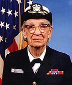

Grace Brewster Murray Hopper ( née Murray , 9 de diciembre de 1906 - 1 de enero de 1992) fue un científico informático estadounidense y el almirante de la Armada de los Estados Unidos. [1] Uno de los primeros programadores de la computadora Harvard Mark I , fue una pionera en la programación de computadoras que inventó una de las primeras herramientas relacionadas con el compilador . Ella popularizó la idea de lenguajes de programación independientes de la máquina, lo que llevó al desarrollo de COBOL , un lenguaje de programación de alto nivel temprano que todavía se usa en la actualidad .
Hopper había intentado alistarse en la Armada durante la Segunda Guerra Mundial , pero fue rechazada por los militares porque tenía 34 años y era demasiado mayor para enrolarse. Ella se unió a las Reservas de la Armada. Hopper comenzó su carrera en informática cuando trabajó en el equipo de Harvard Mark I, dirigido por Howard H. Aiken . En 1949, se unió a Eckert-Mauchly Computer Corporation y formó parte del equipo de desarrollo que diseñó la computadora UNIVAC I en 1944. Fue en Eckert-Mauchly donde comenzó a desarrollar el compilador. Ella creía que el código de computadora podría escribirse en inglés usando un lenguaje de programación basado en palabras en inglés. El compilador convertiría ese código en código máquinaeso sería entendido por las computadoras. En 1952, Hopper terminó su compilador, que fue escrito para el lenguaje de programación del Sistema A-0 .
En 1954, Eckert-Mauchly eligió a Hopper para liderar su departamento de programación automática, y dirigió el lanzamiento de algunos de los primeros lenguajes compilados como FLOW-MATIC . En 1959, ella participó en el consorcio CODASYL , que consultó a Hopper para guiarlos en la creación de un lenguaje de programación independiente de la máquina. Esto condujo al lenguaje COBOL , que se inspiró en su idea de que un idioma se basara en palabras en inglés. En 1966, se retiró de la Reserva Naval, pero en 1967, la Armada la retiró al servicio activo. Se retiró de la Marina en 1986 y encontró trabajo como consultora de Digital Equipment Corporation , compartiendo sus experiencias de computación.
Debido a sus logros y su rango naval, a veces se la llamaba "Grace asombrosa". [6] [7] La Marina de los EE. UU. Arleigh Burke, destructora de misiles guiados de clase USS Hopper, fue nombrada por ella, al igual que la supercomputadora Cray XE6 "Hopper" en el NERSC . [8] Durante su vida, Hopper recibió 40 títulos honoríficos de universidades de todo el mundo. En 1991, recibió la Medalla Nacional de Tecnología . El 22 de noviembre de 2016, fue premiada póstumamente con la Medalla Presidencial de la Libertad por el presidente Barack Obama .
«Es más fácil pedir perdón que pedir permiso»
| Grace Murray Hopper | |
|---|---|
|

Rear Admiral Grace M. Hopper, 1984 |
|
| NickName | "Amazing Grace" |
| Died | January 1, 1992 |